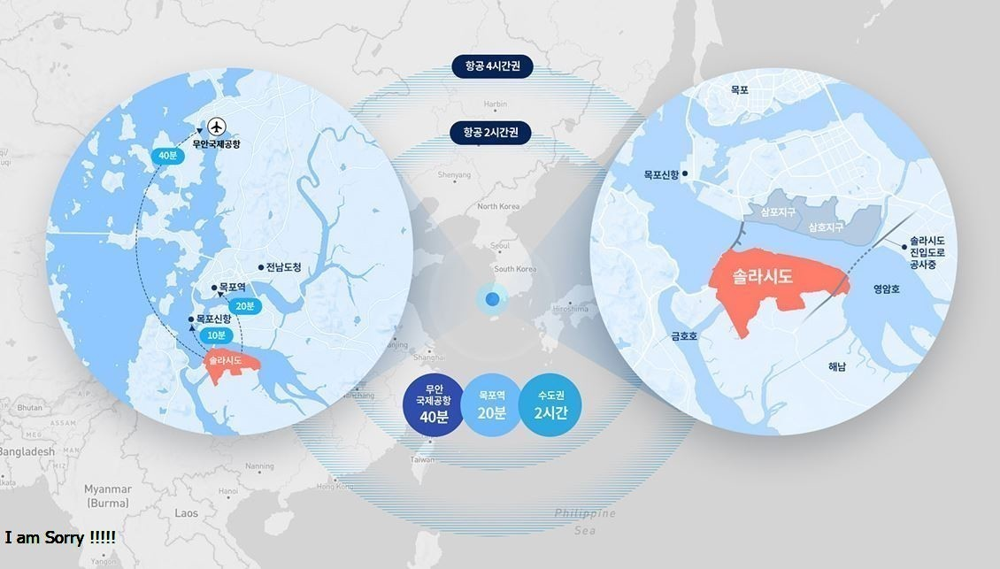
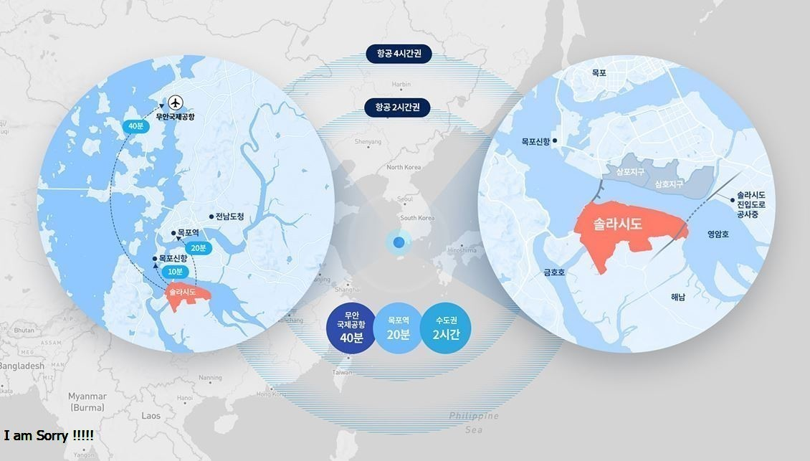
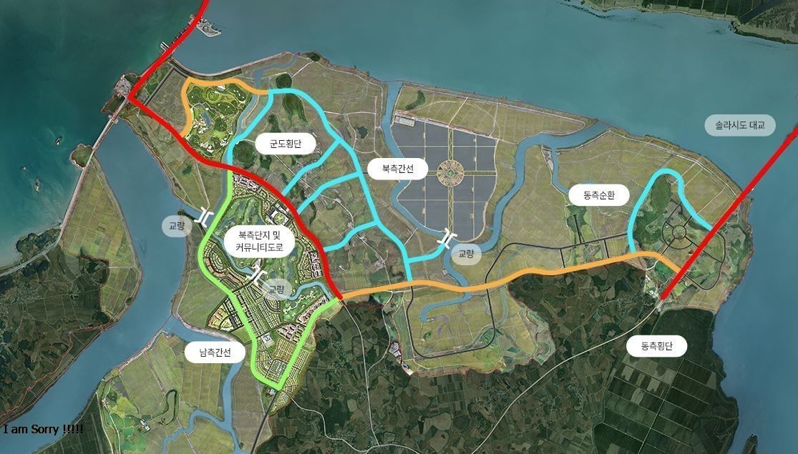

위치
전라남도 해남군 산이면 구성리 일원
전라남도 해남군 산이면 구성리 일원
솔라시도로 들어오는 두 개의 길목(목포 진출입, 영암 진출입)과 연결되는 동서간선도로(총 연장 9km)가 2022년 준공을 목표로 시공에 박차를 가하고 있습니다. 단지 내 환경과 교통 및 주행의 안전, 쾌적 및 연속성을 고려한 도로계획 수립과 인접 교통과의 연계성을 고려한 기반 시설을 제공하기 위해 더욱 노력하고 있습니다.
솔라시도 기업 도시에 추진될 지역거점 스마트시티 조성사업은 '미래도시표준, 솔리시도'를 테마로 전기차 공유서비스와 공유차량 자율주차 서비스, 자율주행 셔틀버스, 솔라시도 메타버스 구현, 태양광 기반 압축쓰레기 처리시설 스마트 인프라 및 서비스 기반을 구축할 계획입니다.

총 연장 10.83km로 건설되는 솔라시도 대교는 해남 산이면에서 영암호를 건너 남해고속도로로 서영암IC까지 연결되는 더블아치형의 아름다운 진입로입니다. 솔라시도 대교는 목포 시내로의 불필요한 이동거리와 시간을 해소시켜주는 역할을 하며 솔라시도는 영암, 해남, 진도, 완도 등 전남 서남해안권 교통의 허브로 자리매김할 것입니다. 여러분을 보다 먼저 맞이하고 인사하겠습니다.